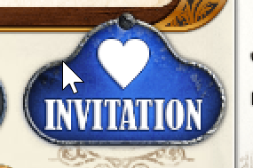

Ticket to Ride is the “go to” board game for me and my family. We’ve been playing for years and like it a lot because it is easy to learn, has a good amount of both luck and strategy, and it is fun for all ages. If you haven’t played it before, you connect cities with trains and get points for connecting cities, number of trains, and longest route. I think we started my kid when he was 5 or so. He’s now 9 years old and currently holds the family’s highest overall average, but I still have the family’s high score. You can usually see us carrying our Ticket to Ride box wherever we go…road trips, camping trips, and even Vegas. To give you an idea of how serious we take this, we capture all of our scores, and use Power BI to analyize averages over time. Here’s a snapshot of one of the graphs:
We’ve introduced it to many friends over the years and we recently saw some of them at social distancing safe birthday party (we all sat in our cars and honked and sang happy birthday as the birthday boy drove by), and realized we haven’t played in a while. I had heard you could play it online, but never looked into it. I also have been wanting to try Ticket to Ride Europe, and other maps. So, I got home and looked into getting everything setup.
It wasn’t exactly straightfoward, so I’m blogging everything you need to do to get it setup for you and your friends.
Ticket to Ride has apps for Steam, iOS, Google Play, and Kindle Fire. According to this post “Does Ticket to Ride have a “cross-platform” option ?”, the creators claim it is cross-platform, meaning you can play anyone regardless of their operating system or app type. For example, if your friend has the iOS app you should be able to play them from Steam. I have not verified this, so please comment below if you have done that successfully.
The Xbox Ticket to Ride game is local only against the computer. So, we quickly ruled that one out.
I decided to go with Steam because everyone in my family has laptops and we didn’t want to play on small phone screens. You may also see reference to Tabletop Simulator, but I decided to not go that route because I couldn’t find an official version of Ticket to Ride for it. Plus I wanted to be able to keep track of scoring and play other random people online, which I don’t think is supported by Tabletop Simulator.
One quick tip is about game duration and player time countdown. Each player is assigned a number of minutes to play and a timer is running whenever they are the active player. If any player’s time runs out, then they are kicked out of the game and replaced by a bot. As far as I can tell, there’s no way to extend your time once you have started the game. Also, something very annoying, is that there’s no “maximum time duration per turn” setting. i.e. “You only get 1 min to play your turn”. That doesn’t exist. So, if you are playing with something that steps away, you have to wait until their timer runs out before you can move onto the next player. I have not been able to find a way to kick someone out of a game that has obviously stepped away. Something to keep in mind, for the sake of your fellow players, if you need to step away, then withdraw from the game - don’t just let it hang there at your turn. See “Withdraw” instructions at the bottom of this post.
1. Install Steam desktop app
You’ll need the desktop app on each laptop.
Go to Steam’s website and click Install Steam, then click Install Steam again.

2. Create Steam account
Every player needs a Steam account. Go to the Steam site and create one for each player.
When the app launches for the first time, click “Create a new Account” button. Enter your details.

They will send you an email to verify your account. Once you have clicked on the “Create My Account” link in the email, then go back to the Steam app and choose an account name and password.
Then login with that account.
3. Setup Steam profile
Even though you have an account, you don’t yet have a profile setup.
In Steam, hover over your name, and click “PROFILE”.

Then click the “Setup Steam Profile” button.

Enter your desired profile name, real name (if you want to), and a custom URL.

Make sure you scroll to the bottom and click the “Save Changes” button.
4. Buy Ticket to Ride for each player
Every player needs to buy the Ticket to Ride game. Like I mentioned earlier, you can probably play against player on other platforms. So, if the other players already have Ticket to Ride, then you shouldn’t need to buy it from Steam. You cannot use Steam Family Sharing because that only allows one person to play at a time. Here’s the details on that:

The cost is $10/player on Steam.
Click here to buy Ticket to Ride.
Once you buy it, you’ll want to install it. While it is installing add your Steam friends.
5. Friend each other on Steam
This step is not necessary if you are only playing Ticket to Ride, but if you want to play other games or if you want to have audio chat during the games, then you can friend the other folks.
In Steam, hover over your name and click “FRIENDS”. Scroll to the bottom, and add each of your friends by their Steam profile name.
If you see an error here like: “ADD FRIEND: Your account does not meet the requirements to use this feature.” Then you likely haven’t bought the game with this account yet. Steam’s policy is to create your account as a limited account, which means you can’t add friends, until you spend $5 with Steam. So, if you see this, then you’ll need to buy the game.

6. Launch Ticket To Ride and create a Days of Wonder account for each player
In order to play online, you will need a Days of Wonder account, they are they creators of the game and have a different account system than Steam.
In Steam, hover over LIBRARY and select HOME.
Click the Play button for Ticket to Ride.

Note: If you only see a “CONNECT” button, then that means you have the game running on a different computer and Steam let’s you stream from that computer to this one. If you want to just play the game locally, then you need to click the little arrow next to the Connect button and select “This machine”
Click the Login button and create an account.
7. Add Days of Wonder “Buddies” for each player
Even though you are already Steam friends with each player, you still need to add them as Days of Wonder “Buddies”. Steam friends if for audio conversations and gaming groups. Days of Wonder buddies enables you to play other Days of Wonder players within the Ticket to Ride game.
Click on the big “Play” button. Then click “Online”.
Click “Players” in the upper-right.
Click the “Find” button.
Enter the Days of Wonder account name for the first player you want to “buddy”.
Click on their name, then click the blue question mark in a heart button.
Click the green “Add to my buddies” list button.

You will then see a green heart next to their name.

If you want to remove that buddy, then select their name, and click on the green heart right under the Players button to remove them.
8. Start a Ticket to Ride game with all your players
IMPORTANT: Have everyone go to the online home screen. Ask them to click “Play” -> “Online”. I have noticed that if the player isn’t in the lobby, then they will never get an invite.
Decide who is going to host the game.
As the host:
Click “Play”-> “Online” -> “Create” -> “Advanced”.

Select the number of players.
Enter a password for the game, so random people don’t join.
Decide if you want the game to count towards players official ranking.
Decide if you want people who leave to be replaced by bots.

Click the “Invitation” button

Click on your friends name and then click the Invite button.
You’ll see all the players you’ll invite in the middle of the screen.
Select the duration that each player will have to play.
Click “Play”.
At this point, all players will be sent an invite that looks like this:
They need to accept the invite, and then click Play.
The host, also needs to click Play one more time.
You are FINALLY all in the game and ready to Play.
How to resume a game or re-join a game
I was playing with my kid the other day and he accidentally hit the escape button and was removed from the game. We thought there was no way for him to return to the game, and we were super bummed. But, then I found the “Resume” feature.
Click “Play” -> “Online” -> Resume

Find the game you want to re-join on the left and then click Play.

How to withdraw from a game
Be nice and withdrawn from a game, so others don’t have to wait while your timer counts down.
Follow same instructions above for resume, but click the Withdrawn button instead of play.
An invite to play with me
My Days of Wonder name is DrStrangePepper. I’d love to play Ticket to Ride with you sometime. Add me as a buddy or ping me on Steam and we’ll figure out a good time to play.
Jon